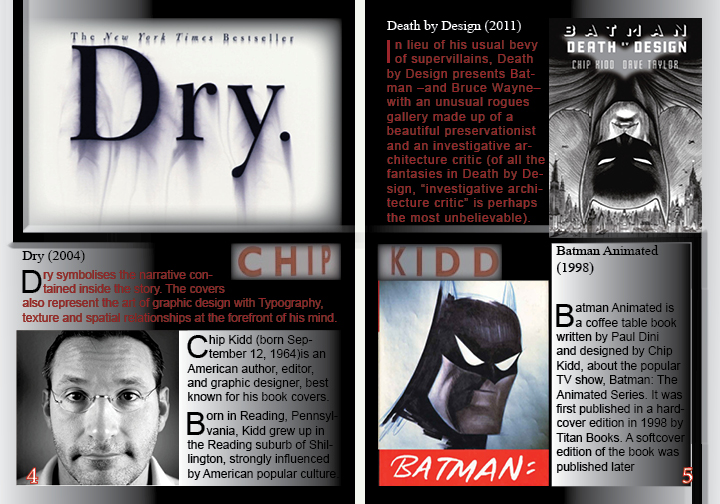
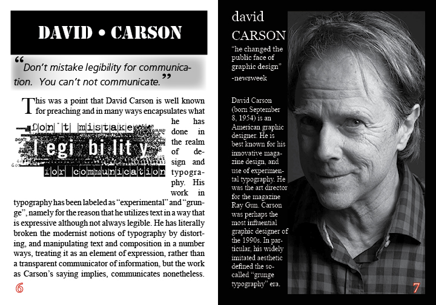
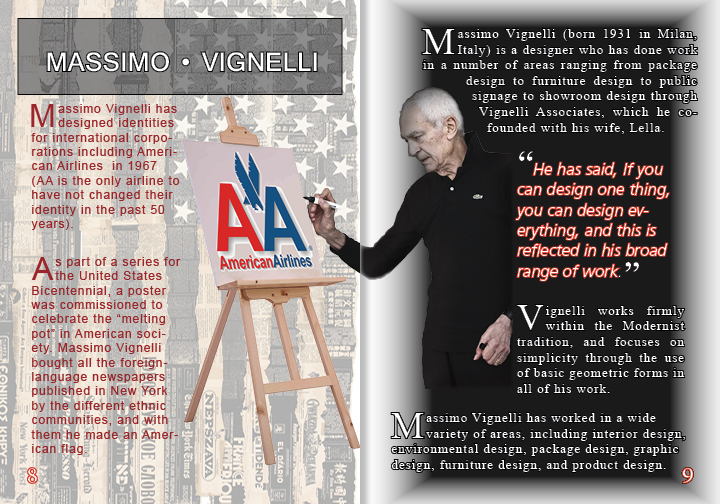
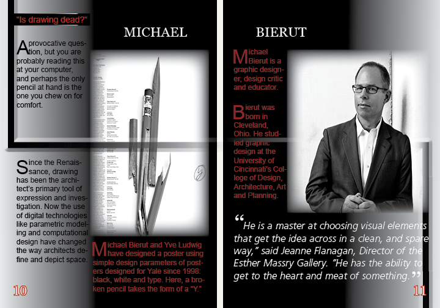
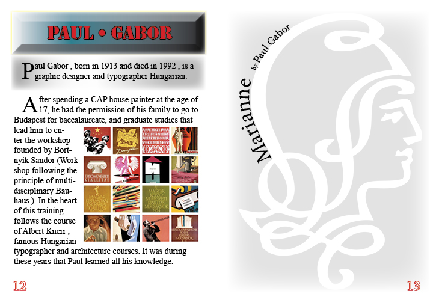
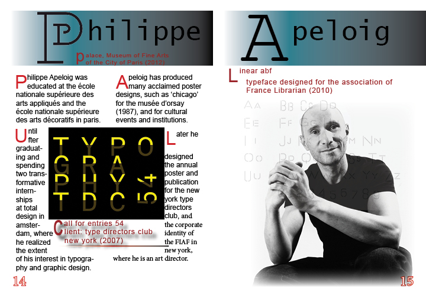
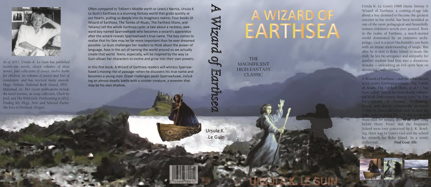

Zine
A zine (an abbreviation of fanzine, or magazine) is most commonly a small circulation self‐published work of original and/or appropriated texts and images usually reproduced via photocopier.
Zines are written in a variety of formats, from computer‐printed text to comics to handwritten text (an example being Cometbus). Topics covered are broad, including fanfiction, politics, art and design, ephemera, personal journals, social theory, single topic obsession, or content far enough outside of the mainstream to be prohibitive of inclusion in more traditional media.
My Zine was focused on some of the most influencial typographers and designers. These designers were responsible for book covers, comic books, fonts, logos, and other artistic designs.
Chip Kidd
Chip Kidd's book jacket designs spawned a revolution in the art of American book packaging.
A book cover is a distillation. It is a haiku of the story.
You know a Chip Kidd book when you see it ‐‐ precisely because it's unexpected, non‐formulaic, and perfectly right for the text within. As a graphic designer for Alfred A. Knopf since 1986, Kidd has designed shelves full of books, including classics you can picture in a snap: Jurassic Park, Naked by David Sedaris, All the Pretty Horses.
David Carson
David Carson is the "grunge typographer" whose magazine Ray Gun helped explode the possibilities of text on a page.
You have to utilize who you are in your work. Nobody else can do that: nobody else can pull from your background, from your parents, your upbringing, your whole life experience
David Carson's boundary‐breaking typography in the 1990s, in Ray Gun magazine and other pop‐cult books, ushered in a new vision of type and page design ‐‐ quite simply, breaking the traditional mold of type on a page and demanding fresh eyes from the reader.
Massimo Vignelli
Many of Vignelli's projects are regarded as classic examples of modern design.
I like design to be semantically corect, syntactically consistent, and pragmatically understandable. I like it to be visually powerful, intellectually elegant, and above all timeless.
Besides the iconic New York City subway map, for which he remains best‐known, Vignelli has worked on some of the twentieth century's most memorable packaging, identity, and public signage for clients like IBM, American Airlines, and Bloomingdale's, and has earned some of the creative industry's most prestigious awards.
Michael Bierut
Bierut has immersed himself in the design community demonstrating to his then boss, hero and mentor Massimo Vignelli.
I like the way words look. The right words are really important. Written words don't exist beyond their visual representation. Good typography is about developing a voice
He has won hundreds of design awards and his work is represented in the permanent collections of the Museum of Modern Art and the Metropolitan Museum of Art in New York, and the Musee des Arts Decoratifs, Montreal.
Paul Gabor
Paul Gabor was a prolific Hungarian typographer and graphic designer, featured recently on Design & Typo le Blog.
Throughout his career, he showed a spirit of graphic experimentation led to the borders of the artwork never take the plunge, because graphic designer, he seemed to attach great importance to the need for restraint.
The layouts of Paul are always designed as a spatial organization architected. It is based on an antique book by Paul Renner in redrawing for inclusion in a space built diagonally reminiscent of the work of many constructivists the Bauhaus and Russian designers.
Philippe Apeloig
Philippe Apeloig's career in graphic design is noted for his posters, many of which are permanently on exhibition at MoMA, and his typographic design.
The role typography plays is that of allowing for more brilliant visualizations of the invisible, and obverts the gaze of people, adding a strength that can't be seen at first glance. That's what makes typography so magnificent.
Philippe Apeloig was born in Paris in 1962, his career in graphic design is noted for his posters, many of which are permanently on exhibition at MoMA, and his typographic design.
Book Cover
The dust jacket (sometimes book jacket, dust wrapper or dust cover) of a book is the detachable outer cover, usually made of paper and printed with text and illustrations. This outer cover has folded flaps that hold it to the front and back book covers. Often the back panel or flaps are printed with biographical information about the author, a summary of the book from the publisher (known as a blurb), critical praise from celebrities or authorities in the book's subject area.
My inspiration for this book cover, based on the story of "A Wizard of Earthsea", was a required reading book in 10th grade for an English class. This is a story about a young man gifted with the ability of magic who pursues study at a school of magic. During a spat with a classmate he conjures up a shadow of himself which he must defeat.
This project made use of Photoshop for combining multiple images and using some brushes to draw the background including the mountains, sea, clouds, and rocky shore. Illustrator was used for the typography. Using the book cover I was able to manipulate the image to create a 3D version and make it appear as though it is reflecting off the surface where it is standing.
Book Cover 3D
Magazine Cover
My first project utilizing only Adobe Illustrator was a design for a car magazine.
The primary focus was choosing a vehicle image and using Illustrator to trace vector points to draw the vehicle. The background was mostly an afterthought and leaves room for improvement, however, the car was mostly finished in design.
I found one of the greatest difficulties of drawing the car was in the tranparency and detail found in the headlamps. It was difficult to imitate the look of the real headlamp. Also the grill and horse logo required a large amount of effort and a great deal of vector points to draw so naturally. However, some of that detail is lost in the conversion to a .jpg image file.
Overall the wheels turned out very nice as well as the transparency in the windows. The project was a success for a first-time use of Illustrator but through this experience I would likely work on the rest of the layout of the magazine such as the background, fix the headlamps, and work on some more of the shadowing and gradients for the vehicle.